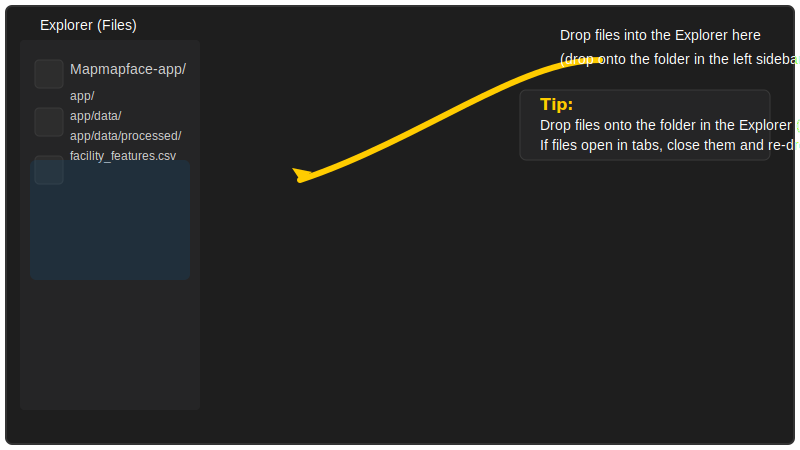

Drop your files onto the left-hand Explorer pane (the Files icon). Do not drop files into the editor area (middle pane) unless you only want to open them in tabs.
After dropping, confirm files appear under the folder in the Explorer. Then tell me the file/folder name you added and I will import them.